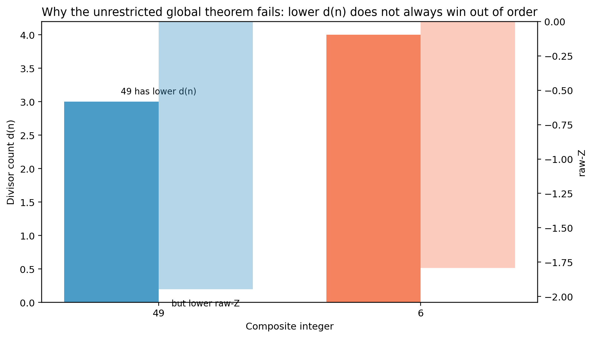

legacy
GWR story: unrestricted counterexample pair
Legacy story figure for the 49 vs 6 obstruction: unrestricted global fewest-divisors maximizer fails, while GWR still holds inside prime gaps.

- Regime
- explicit unordered pair 49 versus 6 (story figure)
- Claim language
- weak
- Reproduce
visualizations/library/.venv/bin/python visualizations/library/entries/gwr-figure-06-counterexample-pair/demo.py- Chapter refs
research/02-gwr-dni/story/story/PROOF.md
- Tags
Observable object
The integers 49 and 6. Fewer divisors do not automatically win on the comparison score once order and magnitude matter outside a prime-gap chamber.
Mechanism
The GWR theorem is a statement about prime-gap interiors, not an unrestricted claim that "fewest divisors always wins everywhere." This figure records the pedagogical obstruction pair used in the GWR story pack.
Provenance
Legacy wrap of figure_06_counterexample_pair.png.
Status and limits
- Status: legacy explanatory figure.
- Does not weaken the proved GWR theorem inside prime gaps (
PROOF.md).